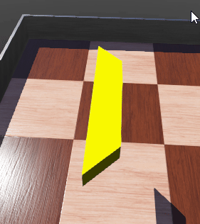

Basketball <<
Previous Next >> Youbot_cart
counter
Webots 啟動時，同時啟動串流伺服器指令: webotsw --stream
內建埠號為 1234，由於採用 WebGL2 進行網頁著色，因此在 Windows 環境中使用 Edge 連線至 http://localhost:1234 或 http://stream_server_ip:1234 將會較為順暢.
至於希望利用 display 展示投籃成績的方法，僅能在近端 Webots 套件中檢視，因此若要讓記分板或計時器能在串流瀏覽器中展示，必須採用 7 段顯示器設置，並利用 supervisor 模式進行操控.
利用 Solvespace 繪製的 7 段顯示器零組件檔案: score_counter.7z
若要在 Webots 中利用變顏色的 .obj 零件顯示數字, 可以透過 Solid - Shape - Mesh 然後將 url 指向 7 段顯示器中的 a ~ g 零件, 並且利用 controller 改變各零件的顏色.
利用 r, b, y, g 按鍵改變 7 段顯示器中的 f 零件示範場景: 7_segment_display.7z, 執行結果如下:

three_digit_counter.7z
由外部 Python 程式的執行控制 Webots 場景:
- 場景 Robot 的 Controller 欄位設為 extern
- 可攜程式環境的 PYTHONPATH 環境變數必須納入 Webots 中的 Python 程式庫: set PYTHONPATH=%Disk%:\Python313\DLLs;%Disk%:\Python313\Lib;%Disk%:\Python313\Lib\site-packages;%Disk%:\Webots_2025a\msys64\mingw64\bin;%Disk%:\Webots_2025a\lib\controller\python;
- 可攜系統的 PYTHON_PATH 必須指向所使用的 Python 版本目錄: set PYTHON_PATH=%Disk%:\Python313
- 可攜系統的 WEBOTS_HOME 必須指令 Webots 所在目錄: set WEBOTS_HOME=%Disk%:\Webots_2025a
原生的 Webots Controller 若根據上述說明, 由外部的 Python 程式控制後, 再經由程式啟動模擬, 應該可以透過 Websocket 設置 Webots 應用程式所在電腦作為 Server, 與網路上的另一台 Client 程式進行互動.
以下先測試由外部程式啟動模擬並進行倒數 999 秒:
from controller import Supervisor
class SevenSegmentController:
def __init__(self, supervisor, color_on, color_off):
self.supervisor = supervisor
# Define the segments for each digit
self.digit_segments = [
[f"a1", f"b1", f"c1", f"d1", f"e1", f"f1", f"g1"], # Units
[f"a2", f"b2", f"c2", f"d2", f"e2", f"f2", f"g2"], # Tens
[f"a3", f"b3", f"c3", f"d3", f"e3", f"f3", f"g3"] # Hundreds
]
# Segment patterns for digits 0-9
self.segment_patterns = {
0: [1, 1, 1, 1, 1, 1, 0],
1: [0, 1, 1, 0, 0, 0, 0],
2: [1, 1, 0, 1, 1, 0, 1],
3: [1, 1, 1, 1, 0, 0, 1],
4: [0, 1, 1, 0, 0, 1, 1],
5: [1, 0, 1, 1, 0, 1, 1],
6: [1, 0, 1, 1, 1, 1, 1],
7: [1, 1, 1, 0, 0, 0, 0],
8: [1, 1, 1, 1, 1, 1, 1],
9: [1, 1, 1, 1, 0, 1, 1]
}
# Colors for on and off states
self.color_on = color_on # Bright green
self.color_off = color_off # Black
# Retrieve material nodes for each segment
self.segment_nodes = []
for digit in self.digit_segments:
digit_nodes = []
for segment in digit:
node = self.supervisor.getFromDef(segment)
if node is None:
print(f"Error: Node with DEF name '{segment}' not found!")
exit()
digit_nodes.append(node.getField("diffuseColor"))
self.segment_nodes.append(digit_nodes)
def set_digit(self, digit_index, value):
"""Set the digit at the given index (0 for units, 1 for tens, 2 for hundreds) to the given value (0-9)."""
pattern = self.segment_patterns[value]
for i, state in enumerate(pattern):
color = self.color_on if state else self.color_off
self.segment_nodes[digit_index][i].setSFVec3f(color)
def display_number(self, number):
"""Display a number (0-999) using the three 7-segment displays."""
if not (0 <= number <= 999):
print("Error: Number out of range (must be 0-999)")
return
# Break the number into hundreds, tens, and units
hundreds = number // 100
tens = (number % 100) // 10
units = number % 10
# Update the displays
self.set_digit(2, hundreds)
self.set_digit(1, tens)
self.set_digit(0, units)
# Main program
if __name__ == "__main__":
# Create a Supervisor instance
supervisor = Supervisor()
# 設定模擬模式為實時啟動
supervisor.simulationSetMode(Supervisor.SIMULATION_MODE_REAL_TIME)
# Define colors
color_on = [0.0, 1.0, 0.0] # Bright green
color_off = [0.0, 0.0, 0.0] # Black
# Create an instance of the SevenSegmentController
controller = SevenSegmentController(supervisor, color_on, color_off)
# Run the simulation loop
timestep = int(supervisor.getBasicTimeStep())
timer = 999 # Start countdown from 999
while supervisor.step(timestep) != -1:
if timer >= 0: # Continue counting down until 0
controller.display_number(timer)
timer -= 1 # Decrement the timer
supervisor.step(1000) # Wait for 1 second in simulation time
其中由程式啟動模擬的程式段為:
# Create a Supervisor instance
supervisor = Supervisor()
# 設定模擬模式為實時啟動
supervisor.simulationSetMode(Supervisor.SIMULATION_MODE_REAL_TIME)
範例如下: three_digit_counter_w9.7z
Basketball <<
Previous Next >> Youbot_cart